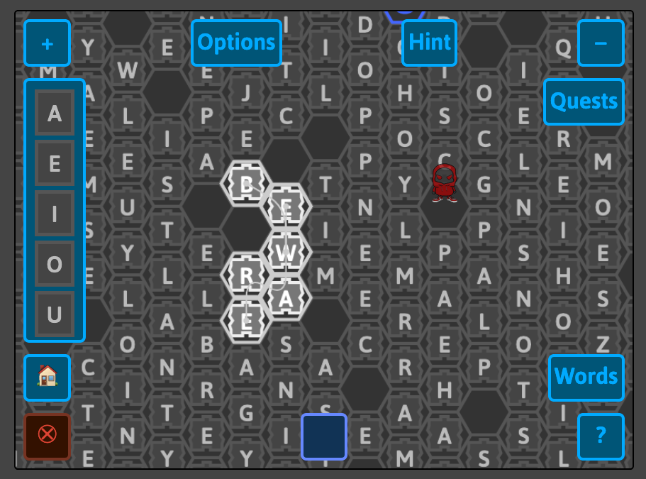

Summer 2020
“Words” is a word-finding game that uses incremental and reversible pseudo-random number generation to create an indefinite board of letters for the player to explore. Although still at an early stage of development, the game demonstrates novel procedural content generation techniques and has potential applications in language pedagogy. As part of the project, we are also attempting to explore procedural rhetorics which offer alternatives to the standard rhetorics of capitalist accumulation and colonialist domination prevalent in most popular games via mechanics like killing enemies, collecting loot, and claiming territory (see e.g., this paper on gardening games as an alterntive). This summer we added features to the Words game over the course of two two-week development “sprints.”

The screenshot above shows what the game board looks like, and you can play the game in a web browser (unfortunately it is not working on mobile at the moment) at: https://cs.wellesley.edu/~expressive/words
In our first sprint, we added a quiz mode that uses a custom word list to create a board, as well as a “backpack” menu that allows extra letters to be used along with letters from the board to spell out words. More info on the sprint 1 features.
In our second sprint, we added a hint feature that allows the user to look up a word and get a hint as to where that word appears in the current view, as well as an avatar system to represent the player within the game. More info on the sprint 2 features.
Although the game still needs several big features like player advancement to be ready for an initial release, we made good progress this summer towards that goal. The ability to deploy a quiz mode version for vocabulary practice is also almost ready, although some questions like how definitions could be incorporated are still outstanding.
Besides work on the Words game, at the beginning of the summer research period we implemented a few demos to show off the capabilities of the incremental & reversible pseudo-random number generation library (Anarchy) that helps create the game board for the words game. You can view those demos at the following links: